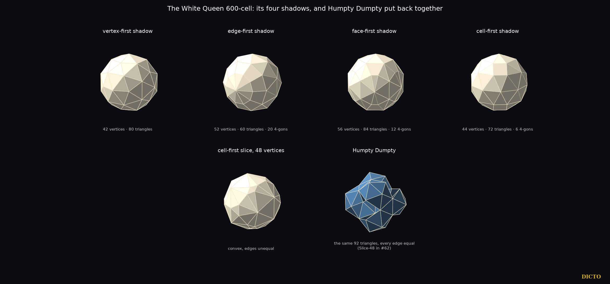

An exact atlas of the slices and shadows of the 600-cell, and Humpty Dumpty put back together
“Begin at the beginning,” the King said gravely, “and go on till you come to the end: then stop.” — Alice's Adventures in Wonderland, ch. 12
That is the plan of this paper: start at the centre of the 600-cell and cut it, height by height, until the cut leaves it at the tip. DICTO's question was whether the 600-cell could be assembled into a definitive picture, every part proved. Our previous paper (#62, Shadows of the Fourth Dimension) asked which of its slices have only triangular faces, and which of those can be rebuilt with every edge equal; here we map every slice. The title is DICTO's: the 600-cell belongs to the White Queen of Through the Looking-Glass, who practised believing impossible things (§5).
The 600-cell is taken with its 120 vertices at distance 2 from the centre: the 8 permutations of (±2, 0, 0, 0), the 16 points (±1, ±1, ±1, ±1) and the 96 even permutations of (±φ, ±1, ±1/φ, 0), where φ = (1+√5)/2. Its edges have length √5 − 1. All arithmetic is exact in ℚ(√5). For each direction d, the height of a point x is x·d, and we sort the vertices by height. The slice at height h is the convex hull of the vertices at that height together with the points where edges of the 600-cell cross that height. Hulls are proposed in floating point, and every face is then verified exactly.
In each direction, d is the vertex, the edge midpoint, the triangle centre or the cell centre itself, not a unit vector, so heights compare within one direction only. The 600-cell is centrally symmetric, so the far half of each direction mirrors the near half; we list the near half, from the centre to the tip.
| Direction | Vertex heights (centre to tip) | Gaps | Slice patterns | Tip | Largest slice |
|---|---|---|---|---|---|
| vertex-first | 5 | 4 | 9 | a vertex | 132 vertices |
| edge-first | 9 | 8 | 17 | an edge | 142 vertices |
| face-first | 11 | 10 | 21 | a triangle | 144 vertices |
| cell-first | 8 | 7 | 15 | a tetrahedron | 144 vertices |
| total | 62 |
Every slice has only triangles and four-sided faces. Each face is the cross-section of one tetrahedral cell, a triangle or a four-sided face, or else a triangle of the 600-cell lying in the cut. A four-sided face appears exactly where the cut crosses a cell through four of its edges. Only a few of them are squares (46 of the 1636 in the atlas); the rest are rectangles, isosceles trapezia and general quadrilaterals.
| Direction | Height | Vertices, triangles | What it is |
|---|---|---|---|
| vertex-first | 0 (centre) | 42, 80 | the central slice; equal-edged form: the 12-dented icosahedron (#62) |
| vertex-first | √5 − 1 | 72, 140 | no equal-edged form with its full symmetry (#62) |
| vertex-first | 2 | 32, 60 | equal-edged forms: excavated and augmented dodecahedron (#62) |
| vertex-first | 1 + √5 | 12, 20 | a regular icosahedron: the twelve neighbours of the tip vertex |
| vertex-first | the gap from 1 + √5 to 4 | 12, 20 | a regular icosahedron: the vertex figure, cut across the twelve edges that meet the tip |
| edge-first | (3+√5)/2 | 32, 60 | no equal-edged form with its full symmetry (#62) |
| edge-first | 1 + √5 | 17, 30 | Shadow-17: two J11 glued on their pentagons (#62) |
| face-first | (4+2√5)/3 | 30, 56 | no equal-edged form with its full symmetry (#62) |
| cell-first | 1 + √5/2 | 48, 92 | Humpty Dumpty (§6) |
| cell-first | (3+√5)/2 | 42, 80 | no equal-edged form with its full symmetry (#62) |
| cell-first | (5+3√5)/4 | 28, 52 | no equal-edged form with its full symmetry (#62) |
| cell-first | (7+3√5)/4 (tip) | 4, 4 | a regular tetrahedron: the cell at the tip |
The other 50 slice patterns all contain four-sided faces. Of the twelve, the two regular icosahedra and the tetrahedron are the 600-cell's own vertex figure and cell; the other nine are the all-triangle patterns studied in #62.
“Why, sometimes I've believed as many as six impossible things before breakfast.” — the White Queen, Through the Looking-Glass, ch. 5
Six of the all-triangle slices are large, with 28 to 72 vertices, and match none of the eight convex deltahedra: the slices with 72 (vertex-first), 32 (edge-first), 30 (face-first), and 48, 42 and 28 (cell-first) vertices. #62 asked of each whether it can be rebuilt with every edge equal while keeping its full symmetry, and solved all six exactly. The 48-vertex slice can be: its equal-edged form is Humpty Dumpty. The other five cannot. Forms of those five with less than their full symmetry are not excluded by #62; they are queued as a separate study.

“All the King's horses and all the King's men / Couldn't put Humpty Dumpty in his place again.” — Through the Looking-Glass, ch. 6
The cell-first slice at height 1 + √5/2 is a convex, egg-like solid of 48 vertices and 92 triangles, with edge lengths in ratios up to (5+√5)/2 ≈ 3.62. Rebuilt with all edges equal and its tetrahedral symmetry kept, it has exactly one form: Humpty Dumpty (DICTO's name; Slice-48 in #62). It has 138 equal edges and dihedral angles from 81.75° to 243.20°; the angles above 180° are creases folded inwards, so the solid folds in and out where the egg was smooth. It does not pass through itself: at edge length 1 its nearest non-adjacent parts are 0.069 apart, and the embedding was confirmed with exact orientation tests (#62). It is put back together, but not in its old place: the equal triangles force a new shape.
“When I use a word,” Humpty Dumpty said in rather a scornful tone, “it means just what I choose it to mean—neither more nor less.” — ch. 6
We use the name in that spirit: Humpty Dumpty means exactly this solid.
The shadows are the projections of the 600-cell along the four directions, and all four are convex. The vertex-first shadow has 42 vertices and 80 triangles, the same pattern as the central slice (#62). The edge-first shadow has 52 vertices, 60 triangles and 20 four-sided faces; the face-first shadow 56 vertices, 84 triangles and 12 four-sided faces; the cell-first shadow 44 vertices, 72 triangles and 6 four-sided faces.
Alicia Boole Stott (1900; encouraged by P. H. Schoute) studied series of three-dimensional sections of the regular four-dimensional polytopes and made complete sets of models of the sections of the 600-cell and the 120-cell; two sets of 600-cell section models are kept at the University of Groningen, and a further set is at the Faulkes Institute, Cambridge. Coxeter's Regular Polytopes treats the polytopes and the vertex-first sections. The directions and number of sections in Boole Stott's series are not stated in the sources we checked, and we did not read her paper; her work is the precedent for this atlas. We did not find in the sources checked: an exact atlas in all four directions including the gaps between vertex heights, the list of all-triangle slices, or Humpty Dumpty.
Sources checked (27 October 2026). Web: Wikipedia, "Alicia Boole Stott"; G. W. Hart, "Models of sections of the 600-cell, made by Alicia Boole Stott" (math.stonybrook.edu); search for the 1900 paper (Proofwiki, MacTutor); Wikipedia, "600-cell"; Wolfram Demonstrations, "Sections of the 16-Cell"; arXiv 1912.06156, "The Geometry of H4 Polytopes" (title only); KNAW digital library (dwc.knaw.nl, title page only). Library: the Dodgson texts (Gutenberg) for every quotation, checked word for word. Coxeter, Regular Polytopes (3rd ed. 1973), cited for its well-known contents, not re-read.
The 600-cell has 62 slice patterns between its centre and its tips in its four main directions (the far half mirrors the near half), all computed exactly here; exactly twelve are made only of triangles, and each is identified. With the four shadows this is a complete, proved atlas of the White Queen's solid. Of the six large all-triangle slices, the 48-vertex slice is the one that can be put back together with equal edges: Humpty Dumpty.
Data and code. Study 2026-10-27-white-queen-600 (atlas600.py, render_atlas.py; data/atlas600.json, atlas600.pkl), using the exact modules of study 2026-10-27-4d-shadows (q5.py, polytopes.py, shadows.py) and its Slice-48 data (form_V48_full_36.json). References: DICTO, Shadows of the Fourth Dimension (#62), DICTO DOI 10.5281/zenodo.23687223. Quotations: L. Carroll, Alice's Adventures in Wonderland (1865), Through the Looking-Glass (1871), Project Gutenberg texts.